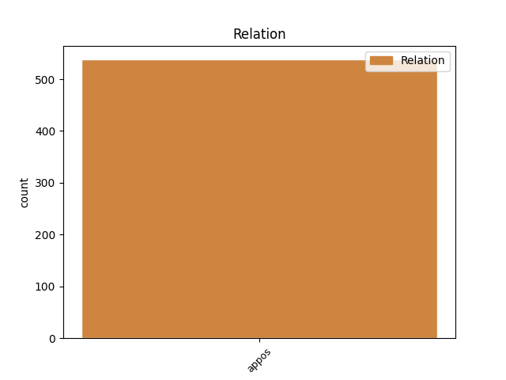
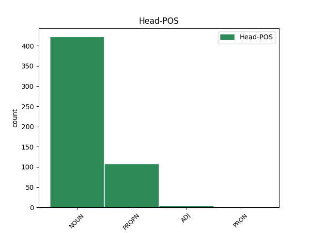
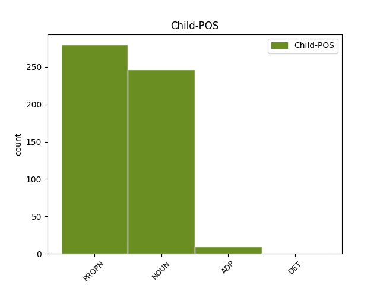

Distribution of features within this leaf



Agreement Rules sorted by frequency.
- When the dependent token is the appositional modifier(appos) of the head token, and the dependent token is PROPN.
1 Novozelandski _ _ _ _ 0 _ _ _
2 haker haker NOUN Ncmsn Case=Nom|Gender=Masc|Number=Sing 0 _ _ _
3 Barnabi Barnabi PROPN Npmsn Case=Nom|Gender=Masc|Number=Sing 2 appos _ _
4 Džek _ _ _ _ 0 _ _ _
5 ( _ _ _ _ 0 _ _ _
6 1977 _ _ _ _ 0 _ _ _
7 – _ _ _ _ 0 _ _ _
8 2013 _ _ _ _ 0 _ _ _
9 ) _ _ _ _ 0 _ _ _
10 radio _ _ _ _ 0 _ _ _
11 je _ _ _ _ 0 _ _ _
12 na _ _ _ _ 0 _ _ _
13 sistemu _ _ _ _ 0 _ _ _
14 koji _ _ _ _ 0 _ _ _
15 bi _ _ _ _ 0 _ _ _
16 mogao _ _ _ _ 0 _ _ _
17 da _ _ _ _ 0 _ _ _
18 izazove _ _ _ _ 0 _ _ _
19 smrtonosan _ _ _ _ 0 _ _ _
20 strujni _ _ _ _ 0 _ _ _
21 udar _ _ _ _ 0 _ _ _
22 kod _ _ _ _ 0 _ _ _
23 svakoga _ _ _ _ 0 _ _ _
24 sa _ _ _ _ 0 _ _ _
25 ugrađenim _ _ _ _ 0 _ _ _
26 pejsmejkerom _ _ _ _ 0 _ _ _
27 . _ _ _ _ 0 _ _ _
1 Odgovor _ _ _ _ 0 _ _ _
2 na _ _ _ _ 0 _ _ _
3 ovo _ _ _ _ 0 _ _ _
4 pitanje _ _ _ _ 0 _ _ _
5 mnoge _ _ _ _ 0 _ _ _
6 kompanije _ _ _ _ 0 _ _ _
7 i _ _ _ _ 0 _ _ _
8 pojedinci _ _ _ _ 0 _ _ _
9 danas _ _ _ _ 0 _ _ _
10 vide _ _ _ _ 0 _ _ _
11 u _ _ _ _ 0 _ _ _
12 takozvanom _ _ _ _ 0 _ _ _
13 računarstvu računarstvo NOUN Ncnsl Case=Loc|Gender=Neut|Number=Sing 0 _ _ _
14 u _ _ _ _ 0 _ _ _
15 oblaku _ _ _ _ 0 _ _ _
16 odnosno _ _ _ _ 0 _ _ _
17 klaud _ _ _ _ 0 _ _ _
18 tehnologiji tehnologija NOUN Ncfsl Case=Loc|Gender=Fem|Number=Sing 13 appos _ SpaceAfter=No
19 . _ _ _ _ 0 _ _ _
1 Srbija _ _ _ _ 0 _ _ _
2 se _ _ _ _ 0 _ _ _
3 nalazi _ _ _ _ 0 _ _ _
4 među _ _ _ _ 0 _ _ _
5 prve _ _ _ _ 0 _ _ _
6 tri _ _ _ _ 0 _ _ _
7 zemlje zemlja NOUN Ncfsg Case=Gen|Gender=Fem|Number=Sing 0 _ _ _
8 u _ _ _ _ 0 _ _ _
9 svetu _ _ _ _ 0 _ _ _
10 po _ _ _ _ 0 _ _ _
11 broju _ _ _ _ 0 _ _ _
12 zahteva _ _ _ _ 0 _ _ _
13 za _ _ _ _ 0 _ _ _
14 azil _ _ _ _ 0 _ _ _
15 -- _ _ _ _ 0 _ _ _
16 iza iza ADP Sg Case=Gen 7 appos _ _
17 Avganistana _ _ _ _ 0 _ _ _
18 i _ _ _ _ 0 _ _ _
19 Kine _ _ _ _ 0 _ _ _
20 . _ _ _ _ 0 _ _ _
1 Međutim _ _ _ _ 0 _ _ _
2 , _ _ _ _ 0 _ _ _
3 Koalicija koalicija NOUN Ncfsn Case=Nom|Gender=Fem|Number=Sing 0 _ _ _
4 svi sav DET Pi-mpn Case=Nom|Gender=Masc|Number=Plur|PronType=Tot 3 appos _ _
5 za _ _ _ _ 0 _ _ _
6 poštena _ _ _ _ 0 _ _ _
7 suđenja _ _ _ _ 0 _ _ _
8 , _ _ _ _ 0 _ _ _
9 Centar _ _ _ _ 0 _ _ _
10 za _ _ _ _ 0 _ _ _
11 građanske _ _ _ _ 0 _ _ _
12 inicijative _ _ _ _ 0 _ _ _
13 , _ _ _ _ 0 _ _ _
14 Centar _ _ _ _ 0 _ _ _
15 za _ _ _ _ 0 _ _ _
16 demokratski _ _ _ _ 0 _ _ _
17 razvoj _ _ _ _ 0 _ _ _
18 i _ _ _ _ 0 _ _ _
19 izbore _ _ _ _ 0 _ _ _
20 i _ _ _ _ 0 _ _ _
21 Forum _ _ _ _ 0 _ _ _
22 Roma _ _ _ _ 0 _ _ _
23 za _ _ _ _ 0 _ _ _
24 ženska _ _ _ _ 0 _ _ _
25 prava _ _ _ _ 0 _ _ _
26 - _ _ _ _ 0 _ _ _
27 Arka _ _ _ _ 0 _ _ _
28 , _ _ _ _ 0 _ _ _
29 u _ _ _ _ 0 _ _ _
30 saradnji _ _ _ _ 0 _ _ _
31 sa _ _ _ _ 0 _ _ _
32 Komitetom _ _ _ _ 0 _ _ _
33 UN _ _ _ _ 0 _ _ _
34 za _ _ _ _ 0 _ _ _
35 borbu _ _ _ _ 0 _ _ _
36 protiv _ _ _ _ 0 _ _ _
37 mučenja _ _ _ _ 0 _ _ _
38 su _ _ _ _ 0 _ _ _
39 neke _ _ _ _ 0 _ _ _
40 od _ _ _ _ 0 _ _ _
41 nevladinih _ _ _ _ 0 _ _ _
42 organizacija _ _ _ _ 0 _ _ _
43 koje _ _ _ _ 0 _ _ _
44 sprovode _ _ _ _ 0 _ _ _
45 projekat _ _ _ _ 0 _ _ _
46 podrške _ _ _ _ 0 _ _ _
47 ljudskim _ _ _ _ 0 _ _ _
48 pravima _ _ _ _ 0 _ _ _
49 . _ _ _ _ 0 _ _ _
Disagree Examples:
1 Član _ _ _ _ 0 _ _ _
2 Predsedništva _ _ _ _ 0 _ _ _
3 Bosne Bosna PROPN Npfsg Case=Gen|Gender=Fem|Number=Sing 0 _ _ _
4 i _ _ _ _ 0 _ _ _
5 Hercegovine _ _ _ _ 0 _ _ _
6 ( _ _ _ _ 0 _ _ _
7 BiH BiH PROPN Npmsn Case=Nom|Gender=Masc|Number=Sing 3 appos _ SpaceAfter=No
8 ) _ _ _ _ 0 _ _ _
9 Željko _ _ _ _ 0 _ _ _
10 Komšić _ _ _ _ 0 _ _ _
11 podneo _ _ _ _ 0 _ _ _
12 je _ _ _ _ 0 _ _ _
13 u _ _ _ _ 0 _ _ _
14 utorak _ _ _ _ 0 _ _ _
15 ( _ _ _ _ 0 _ _ _
16 20. _ _ _ _ 0 _ _ _
17 marta _ _ _ _ 0 _ _ _
18 ) _ _ _ _ 0 _ _ _
19 ostavku _ _ _ _ 0 _ _ _
20 na _ _ _ _ 0 _ _ _
21 mesto _ _ _ _ 0 _ _ _
22 potpredsednika _ _ _ _ 0 _ _ _
23 Socijaldemokratske _ _ _ _ 0 _ _ _
24 partije _ _ _ _ 0 _ _ _
25 ( _ _ _ _ 0 _ _ _
26 SDP _ _ _ _ 0 _ _ _
27 ) _ _ _ _ 0 _ _ _
28 i _ _ _ _ 0 _ _ _
29 dugogodišnjeg _ _ _ _ 0 _ _ _
30 člana _ _ _ _ 0 _ _ _
31 najvišeg _ _ _ _ 0 _ _ _
32 rukovodstva _ _ _ _ 0 _ _ _
33 stranke _ _ _ _ 0 _ _ _
34 . _ _ _ _ 0 _ _ _
1 Član _ _ _ _ 0 _ _ _
2 Predsedništva _ _ _ _ 0 _ _ _
3 Bosne _ _ _ _ 0 _ _ _
4 i _ _ _ _ 0 _ _ _
5 Hercegovine _ _ _ _ 0 _ _ _
6 ( _ _ _ _ 0 _ _ _
7 BiH _ _ _ _ 0 _ _ _
8 ) _ _ _ _ 0 _ _ _
9 Željko _ _ _ _ 0 _ _ _
10 Komšić _ _ _ _ 0 _ _ _
11 podneo _ _ _ _ 0 _ _ _
12 je _ _ _ _ 0 _ _ _
13 u _ _ _ _ 0 _ _ _
14 utorak _ _ _ _ 0 _ _ _
15 ( _ _ _ _ 0 _ _ _
16 20. _ _ _ _ 0 _ _ _
17 marta _ _ _ _ 0 _ _ _
18 ) _ _ _ _ 0 _ _ _
19 ostavku _ _ _ _ 0 _ _ _
20 na _ _ _ _ 0 _ _ _
21 mesto _ _ _ _ 0 _ _ _
22 potpredsednika _ _ _ _ 0 _ _ _
23 Socijaldemokratske _ _ _ _ 0 _ _ _
24 partije partija NOUN Ncfsg Case=Gen|Gender=Fem|Number=Sing 0 _ _ _
25 ( _ _ _ _ 0 _ _ _
26 SDP SDP PROPN Npmsn Case=Nom|Gender=Masc|Number=Sing 24 appos _ SpaceAfter=No
27 ) _ _ _ _ 0 _ _ _
28 i _ _ _ _ 0 _ _ _
29 dugogodišnjeg _ _ _ _ 0 _ _ _
30 člana _ _ _ _ 0 _ _ _
31 najvišeg _ _ _ _ 0 _ _ _
32 rukovodstva _ _ _ _ 0 _ _ _
33 stranke _ _ _ _ 0 _ _ _
34 . _ _ _ _ 0 _ _ _
1 Mnogi _ _ _ _ 0 _ _ _
2 članovi _ _ _ _ 0 _ _ _
3 stranke _ _ _ _ 0 _ _ _
4 misle _ _ _ _ 0 _ _ _
5 da _ _ _ _ 0 _ _ _
6 je _ _ _ _ 0 _ _ _
7 Lagumdžijina _ _ _ _ 0 _ _ _
8 odluka _ _ _ _ 0 _ _ _
9 da _ _ _ _ 0 _ _ _
10 uđe _ _ _ _ 0 _ _ _
11 u _ _ _ _ 0 _ _ _
12 koaliciju _ _ _ _ 0 _ _ _
13 sa _ _ _ _ 0 _ _ _
14 Strankom stranka NOUN Ncfsi Case=Ins|Gender=Fem|Number=Sing 0 _ _ _
15 demokratske _ _ _ _ 0 _ _ _
16 akcije _ _ _ _ 0 _ _ _
17 ( _ _ _ _ 0 _ _ _
18 SDA SDA PROPN Npmsn Case=Nom|Gender=Masc|Number=Sing 14 appos _ SpaceAfter=No
19 ) _ _ _ _ 0 _ _ _
20 bila _ _ _ _ 0 _ _ _
21 autokratska _ _ _ _ 0 _ _ _
22 -- _ _ _ _ 0 _ _ _
23 i _ _ _ _ 0 _ _ _
24 posmatrana _ _ _ _ 0 _ _ _
25 je _ _ _ _ 0 _ _ _
26 kao _ _ _ _ 0 _ _ _
27 potpuna _ _ _ _ 0 _ _ _
28 izdaja _ _ _ _ 0 _ _ _
29 od _ _ _ _ 0 _ _ _
30 strane _ _ _ _ 0 _ _ _
31 većine _ _ _ _ 0 _ _ _
32 stranačkih _ _ _ _ 0 _ _ _
33 krugova _ _ _ _ 0 _ _ _
34 i _ _ _ _ 0 _ _ _
35 građana _ _ _ _ 0 _ _ _
36 koji _ _ _ _ 0 _ _ _
37 su _ _ _ _ 0 _ _ _
38 podržali _ _ _ _ 0 _ _ _
39 SPD _ _ _ _ 0 _ _ _
40 na _ _ _ _ 0 _ _ _
41 izborima _ _ _ _ 0 _ _ _
42 . _ _ _ _ 0 _ _ _
1 Vitalan _ _ _ _ 0 _ _ _
2 proces _ _ _ _ 0 _ _ _
3 razvoja _ _ _ _ 0 _ _ _
4 zemlje _ _ _ _ 0 _ _ _
5 pogođen _ _ _ _ 0 _ _ _
6 je _ _ _ _ 0 _ _ _
7 nestabilnošću _ _ _ _ 0 _ _ _
8 i _ _ _ _ 0 _ _ _
9 neizvesnošću _ _ _ _ 0 _ _ _
10 " _ _ _ _ 0 _ _ _
11 , _ _ _ _ 0 _ _ _
12 rekao _ _ _ _ 0 _ _ _
13 je _ _ _ _ 0 _ _ _
14 Timofti _ _ _ _ 0 _ _ _
15 parlamentu _ _ _ _ 0 _ _ _
16 u _ _ _ _ 0 _ _ _
17 ponedeljak ponedeljak NOUN Ncmsan Animacy=Inan|Case=Acc|Gender=Masc|Number=Sing 0 _ _ _
18 ( _ _ _ _ 0 _ _ _
19 19. _ _ _ _ 0 _ _ _
20 marta mart NOUN Ncmsg Case=Gen|Gender=Masc|Number=Sing 17 appos _ SpaceAfter=No
21 ) _ _ _ _ 0 _ _ _
22 , _ _ _ _ 0 _ _ _
23 nakon _ _ _ _ 0 _ _ _
24 što _ _ _ _ 0 _ _ _
25 su _ _ _ _ 0 _ _ _
26 poslanici _ _ _ _ 0 _ _ _
27 potvrdili _ _ _ _ 0 _ _ _
28 izbor _ _ _ _ 0 _ _ _
29 od _ _ _ _ 0 _ _ _
30 16. _ _ _ _ 0 _ _ _
31 marta _ _ _ _ 0 _ _ _
32 . _ _ _ _ 0 _ _ _
1 Predsednik _ _ _ _ 0 _ _ _
2 Ahmet _ _ _ _ 0 _ _ _
3 Nedždet _ _ _ _ 0 _ _ _
4 Sezer _ _ _ _ 0 _ _ _
5 potpisao _ _ _ _ 0 _ _ _
6 je _ _ _ _ 0 _ _ _
7 u _ _ _ _ 0 _ _ _
8 petak petak NOUN Ncmsan Animacy=Inan|Case=Acc|Gender=Masc|Number=Sing 0 _ _ _
9 ( _ _ _ _ 0 _ _ _
10 21. _ _ _ _ 0 _ _ _
11 maja maj NOUN Ncmsg Case=Gen|Gender=Masc|Number=Sing 8 appos _ SpaceAfter=No
12 ) _ _ _ _ 0 _ _ _
13 ustavne _ _ _ _ 0 _ _ _
14 amandmane _ _ _ _ 0 _ _ _
15 . _ _ _ _ 0 _ _ _